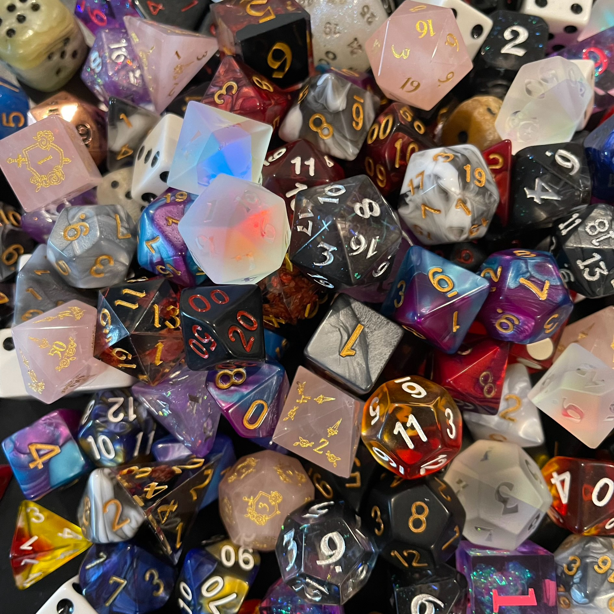
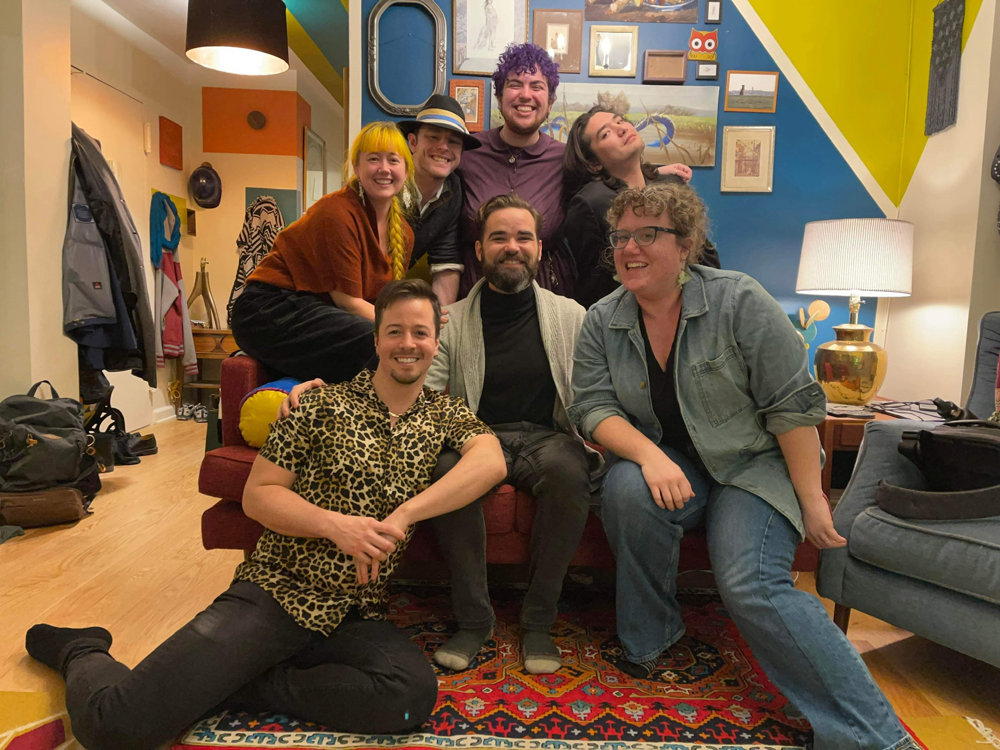

Back in 2018, Jasen began what can only be described as one of the most intense hyperfixations of his life when he innocently started listening to the podcast The Adventure Zone: Balance to "see what this Dungeons & Dragons thing was all about". From there, he would not only go on to voraciously consume the content of Critical Role, NADDPOD, and Dimension 20, but begin his forray into tabletop role-playing games (TTRPGs) as a Dungeon Master (DM) himself.
Over the last few years, Jasen has DM'ed for first-time players, people who have been playing for years, and everything in between. He loves nothing more than ushering in a newfound love for the medium in anyone that is curious to learn. His style as DM is continually evolving as he learns, grows, and changes as a person, but adaptability to what each specific table wants and needs and making sure that everyone is having fun is at the forefront of what he would call his "style". He is also a strong advocate for the use of safety tools such as X-Cards and Lines and Veils during gameplay.
Alongside his long-time collaborator and best friend, Hannah Tobias, Jasen developed a set of rules to make 5th Edition Dungeons & Dragons into a drinking game, enacting them in their podcast, Don't Drink and Dungeons and Dragons (or Don't DnDnD for short!). Don't DnDnD is a twist on the typical "actual-play" formula, both with the addition of drinking game rules as well as the fact that it is only a 2-person campaign. One player and one DM collaboratively (and drunkenly) tell the story of the hero Blaise Jamjar as they take on a fantastical and entirely home-brewed world. Filled with challenging combat, tense relationships, and home-brewed game mechanics, Don't DnDnD was nominated for Outstanding Actual Play and Best Series Premise in the 2021 New Jersey Web Festival. Jasen was also nominated the same year for Best Game Master. Don't DnDnD can be found anywhere you can listen to podcasts!